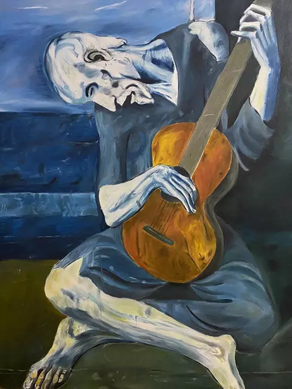

Kübizm Nedir?
Kübizm, 20. yüzyılın başlarında Fransa'da ortaya çıkan, sanat tarihinde devrim niteliğinde bir akımdır. Pablo Picasso ve Georges Braque tarafından öncülük edilen bu akım, doğayı ve nesneleri geometrik şekillerle analiz ederek farklı açılardan bir arada gösterme anlayışına dayanır. Perspektifin geleneksel kullanımını reddeden Kübizm, özellikle resim ve heykelde yepyeni bir görsel dil yaratmıştır. Gerçekliği parçalara ayırarak yeniden yapılandıran bu yaklaşım, modern sanatın gelişiminde önemli bir rol oynamıştır.
